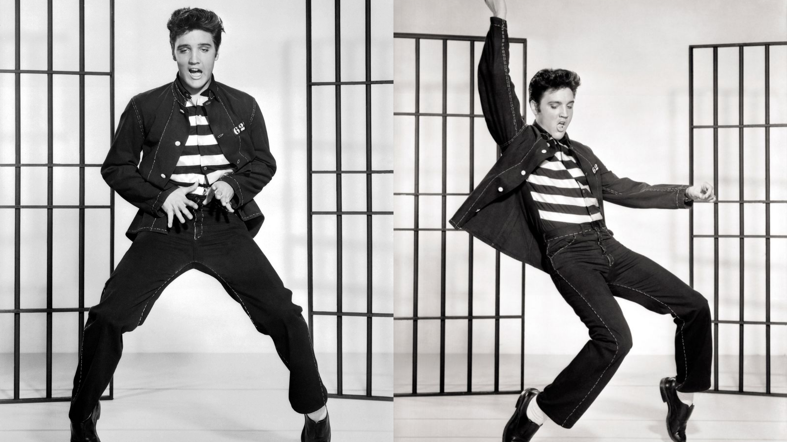

Historia do Rock and Rolll
Rock and roll nos anos 50
O Rock And Roll surgiu em meados da década de 50. Originado da mistura de estilos da música negra como blues, R&B, soul e funk com o folk e country do interior americano, o gênero musical foi, é e sempre será um dos maiores movimentos artísticos da história da humanidade. Transcendendo gerações e quebrando barreiras, o estilo foi o responsável por tornar a indústria fonográfica em um interesse público e coletivo ao impactar diretamente o comportamento social de milhões de pessoas ao redor do mundo, além de estabelecer novos padrões e abordagens na comercialização da arte.
Não há como tentar contar esta história do início sem mencionar grandes nomes como Johnny Cash e Little Richard, que também são considerados enormes influências de tudo que ainda estaria por vir, mas os músicos que definitivamente tiveram maior impacto no molde da sonoridade do gênero e da transformação da música e do artista-produto na indústria fonográfica da época foram Bill Haley, Buddy Holly, Chuck Berry, Elvis Presley e Jackie Brenston.
Também é importante citar Buddy Holly, Ritchie Valens e The Big Bopper. Músicos influentes da década que faleceram em um desastre aéreo em 3 de fevereiro de 1959. O acidente ficou conhecido como “O dia em que a música morreu”.